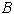
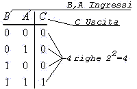
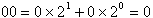
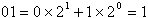
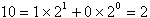
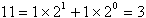

TAVOLE DI VERITA'
| Il comportamento di un sistema combinatorio,
oltre ad essere descritto algebricamente dalla relativa funzione, può
essere descritto in forma tabellare da una tavola (o tabella) di
verità. Posto uguale ad N il numero delle variabili indipendenti (ingressi di una rete combinatoria), la tavola avra' 2N righe (ad es. per esprimere  occorreranno 4 righe (2N=4) corrispondenti alle 4 combinazioni delle 2 variabili |
|||||||||||||||||||||||||
 Le colonne della tavola sono pari alla somma del numero delle
variabili indipendenti e delle variabili dipendenti ( quindi, nel caso
della variabile dipendente Le colonne relative alle variabili indipendenti vengono separate da una linea verticale dalla ( o dalle) colonne relative alle variabili dipendenti. In testa alla tabella viene aggiunta una riga orizzontale
riservata all' indicazione del nome delle variabili associate ad ogni
colonna della tavola. |
|||||||||||||||||||||||||
| La tabella viene riempita scrivendo prima tutti i possibili valori binari delle variabili indipendenti (in genere , ad evitare confusione, conviene scrivere i valori nell ' ordine binario naturale, ad es. nel caso di due variabili indipendenti conviene scrivere i valori nell' ordine: | |||||||||||||||||||||||||
|
    |
|||||||||||||||||||||||||
| successivamente nella colonna ( o nelle colonne)
relativa alla variabile ( o alle variabili) dipendente (dipendenti) si
scrivono i valori binari assunti da tale variabile (uscita) in
corrispondenza dei rispettivi ingressi.
|
|||||||||||||||||||||||||
TABELLA RIASSUNTIVA: SIMBOLI GRAFICI PORTE LOGICHE E RELATIVE TAVOLE DI VERITA'
|
|||||||||||||||||||||||||